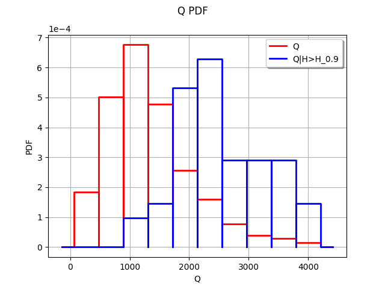

Compare unconditional and conditional histograms¶
In this example, we compare unconditional and conditional histograms for a simulation. We consider the flooding model. Let  be a function which takes four inputs
be a function which takes four inputs  , ,
, ,  and
and  and returns one output .
and returns one output .
We first consider the (unconditional) distribution of the input .
Let  be a given threshold on the output : we consider the event . Then we consider the conditional distribution of the input given that : .
be a given threshold on the output : we consider the event . Then we consider the conditional distribution of the input given that : .
If these two distributions are significantly different, we conclude that the input has an impact on the event .
In order to approximate the distribution of the output , we perform a Monte-Carlo simulation with size 500. The threshold is chosen as the 90% quantile of the empirical distribution of . In this example, the distribution is aproximated by its empirical histogram (but this could be done with another distribution approximation as well, such as kernel smoothing for example).
[1]:
import openturns as ot
Create the marginal distributions of the parameters.
[2]:
dist_Q = ot.TruncatedDistribution(ot.Gumbel(558., 1013.), 0, ot.TruncatedDistribution.LOWER)
dist_Ks = ot.TruncatedDistribution(ot.Normal(30.0, 7.5), 0, ot.TruncatedDistribution.LOWER)
dist_Zv = ot.Uniform(49.0, 51.0)
dist_Zm = ot.Uniform(54.0, 56.0)
marginals = [dist_Q, dist_Ks, dist_Zv, dist_Zm]
Create the joint probability distribution.
[3]:
distribution = ot.ComposedDistribution(marginals)
distribution.setDescription(['Q', 'Ks', 'Zv', 'Zm'])
Create the model.
[4]:
model = ot.SymbolicFunction(['Q', 'Ks', 'Zv', 'Zm'],
['(Q/(Ks*300.*sqrt((Zm-Zv)/5000)))^(3.0/5.0)'])
Create a sample.
[5]:
size = 500
inputSample = distribution.getSample(size)
outputSample = model(inputSample)
Merge the input and output samples into a single sample.
[6]:
sample = ot.Sample(size,5)
sample[:,0:4] = inputSample
sample[:,4] = outputSample
sample[0:5,:]
[6]:
| v0 | v1 | v2 | v3 | v4 | |
|---|---|---|---|---|---|
| 0 | 1443.602798325532 | 30.156613494725274 | 49.11713595070338 | 55.59185930777356 | 2.4439424253360924 |
| 1 | 2174.8898945480146 | 34.67890291392808 | 50.764851072298455 | 55.87647205461956 | 3.085132426791521 |
| 2 | 626.1023680891167 | 35.75352992912951 | 50.03020209989136 | 54.661879004882564 | 1.478061905093236 |
| 3 | 325.8123641551359 | 36.665987740324184 | 49.026338291130784 | 55.366752716918725 | 0.8953760185932061 |
| 4 | 981.3994326290226 | 41.10229410031924 | 49.39776320365176 | 54.84770660838047 | 1.6954636957219766 |
Extract the first column of inputSample into the sample of the flowrates .
[7]:
sampleQ = inputSample[:,0]
[8]:
import numpy as np
def computeConditionnedSample(sample, alpha = 0.9, criteriaComponent = None, selectedComponent = 0):
'''
Return values from the selectedComponent-th component of the sample.
Selects the values according to the alpha-level quantile of
the criteriaComponent-th component of the sample.
'''
dim = sample.getDimension()
if criteriaComponent is None:
criteriaComponent = dim - 1
sortedSample = sample.sortAccordingToAComponent(criteriaComponent)
quantiles = sortedSample.computeQuantilePerComponent(alpha)
quantileValue = quantiles[criteriaComponent]
sortedSampleCriteria = sortedSample[:,criteriaComponent]
indices = np.where(np.array(sortedSampleCriteria.asPoint())>quantileValue)[0]
conditionnedSortedSample = sortedSample[int(indices[0]):,selectedComponent]
return conditionnedSortedSample
Create an histogram for the unconditional flowrates.
[9]:
numberOfBins = 10
histogram = ot.HistogramFactory().buildAsHistogram(sampleQ,numberOfBins)
Extract the sub-sample of the input flowrates Q which leads to large values of the output H.
[10]:
alpha = 0.9
criteriaComponent = 4
selectedComponent = 0
conditionnedSampleQ = computeConditionnedSample(sample,alpha,criteriaComponent,selectedComponent)
We could as well use:
conditionnedHistogram = ot.HistogramFactory().buildAsHistogram(conditionnedSampleQ)
but this creates an histogram with new classes, corresponding to conditionnedSampleQ. We want to use exactly the same classes as the full sample, so that the two histograms match.
[11]:
first = histogram.getFirst()
width = histogram.getWidth()
conditionnedHistogram = ot.HistogramFactory().buildAsHistogram(conditionnedSampleQ,first,width)
Then creates a graphics with the unconditional and the conditional histograms.
[12]:
graph = histogram.drawPDF()
graph.setLegends(["Q"])
#
graphConditionnalQ = conditionnedHistogram.drawPDF()
graphConditionnalQ.setColors(["blue"])
graphConditionnalQ.setLegends(["Q|H>H_%s" % (alpha)])
graph.add(graphConditionnalQ)
graph
[12]:

We see that the two histograms are very different. The high values of the input seem to often lead to a high value of the output .
We could explore this situation further by comparing the unconditional distribution of (which is known in this case) with the conditonal distribution of , estimated by kernel smoothing. This would have the advantage of accuracy, since the kernel smoothing is a more accurate approximation of a distribution than the histogram.